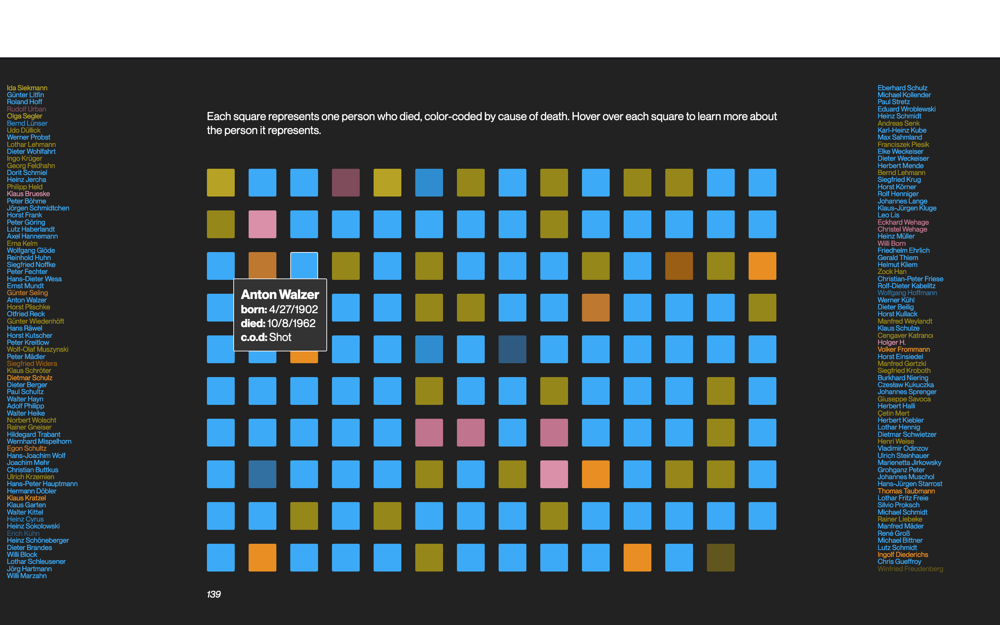
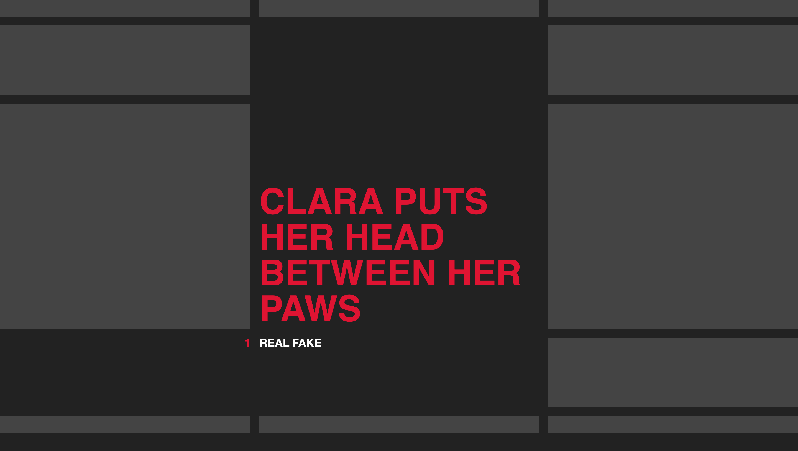
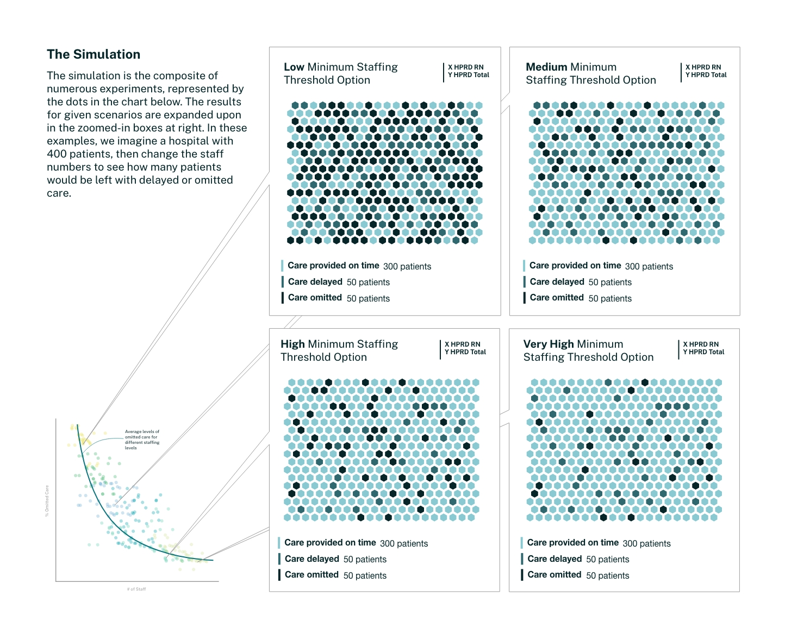
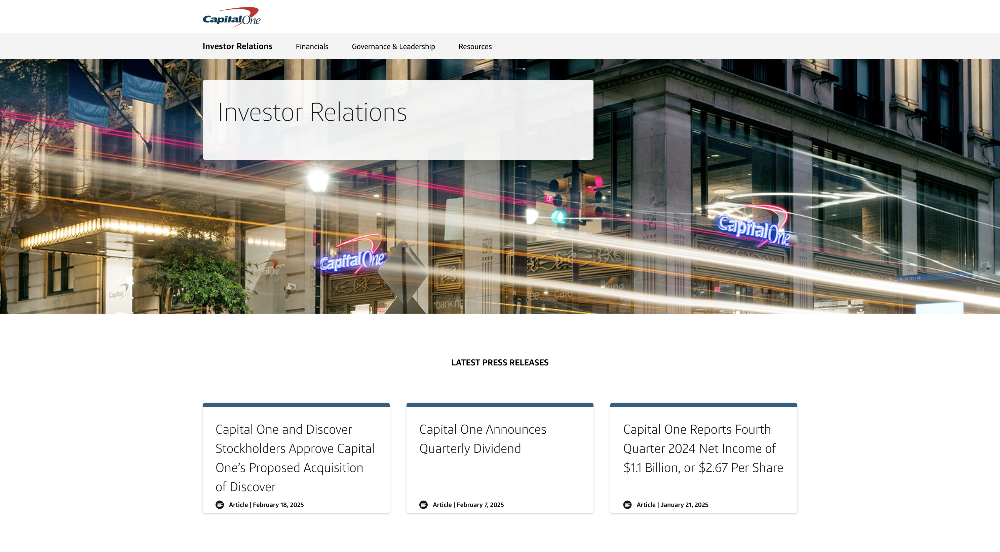

SELECTED WORK
-
Berlin Wall Data Visualization




-
Data Visualization Explorations


-
David Bowie Lyric Game


-
Reimagined Book Covers


-
Portfolio Manager Data Explorer (Case Study)


-
CMS Simulation Study Infographic



-
Capital One Investor Relations Page (Case Study)
